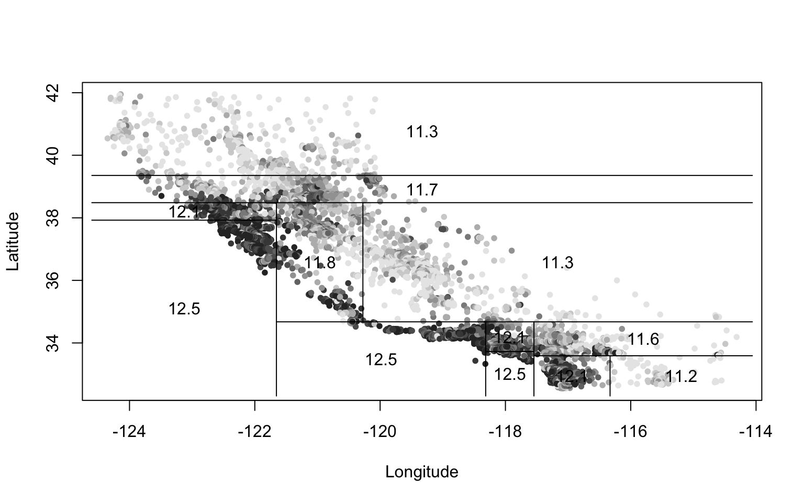
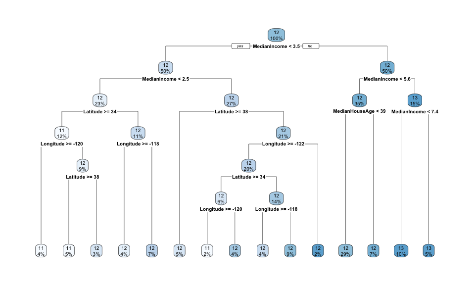

Chapter 8 Classification
8.1 10/29/19 Agenda
- classification
- \(k\)-Nearest Neighbors
- bias-variance trade-off
- cross validation
Important Note: For the majority of the classification and clustering methods, we will use the caret package in R. For more information see: http://topepo.github.io/caret/index.html
Also, check out the caret cheat sheet: https://github.com/rstudio/cheatsheets/raw/master/caret.pdf
Baumer (2015) provides a concise explanation of how both statistics and data science work to enhance ideas of machine learning, one aspect of which is classification:
In order to understand machine learning, one must recognize the differences between the mindset of the data miner and the statistician, notably characterized by Breiman (2001), who distinguished two types of models f for y, the response variable, and x, a vector of explanatory variables. One might consider a data model f such that y \(\sim\) f(x), assess whether f could reasonably have been the process that generated y from x, and then make inferences about f. The goal here is to learn about the real process that generated y from x, and the conceit is
Alternatively, one might construct an algorithmic model f, such that \(y \sim f(x)\), and use f to predict unobserved values of y. If it can be determined that f does in fact do a good job of predicting values of y, one might not care to learn much about f. In the former case, since we want to learn about f, a simpler model may be preferred. Conversely, in the latter case, since we want to predict new values of y, we may be indifferent to model complexity (other than concerns about overfitting and scalability).
Classification is a supervised learning technique to extract general patterns from the data in order to build a predictor for a new test or validation data set. That is, the model should classify new points into groups (or with a numerical response values) based on a model built from a set of data which provides known group membership for each value. For most of the methods below, we will consider classifying into categories (in fact, usually only two categories), but sometimes (e.g., support vector machines and linear regression) the goal is to predict a numeric variable.
Some examples of classification techniques include: linear regression, logistic regression, neural networks, classification trees, random forests, k-nearest neighbors, support vector machines, näive Bayes, and linear discriminant analysis. We will cover the methods in bold.
Simple is Better (From Fielding (2007), p. 87)
- We want to avoid over-fitting the model (certainly, it is a bad idea to model the noise!)
- Future prediction performance goes down with too many predictors.
- Simple models provide better insight into causality and specific associations.
- Fewer predictors implies fewer variables to collect in later studies.
That said, the model should still represent the complexity of the data! We describe the trade-off above as the “bias-variance” trade-off. In order to fully understand that trade-off, let’s first cover the classification method known as \(k\)-Nearest Neighbors.
8.2 Cross Validation
8.2.1 Bias-variance trade-off
Excellent resource
for explaining the bias-variance trade-off: http://scott.fortmann-roe.com/docs/BiasVariance.html
Variance refers to the amount by which \(\hat{f}\) would change if we estimated it using a different training set. Generally, the closer the model fits the data, the more variable it will be (it’ll be different for each data set!). A model with many many explanatory variables will often fit the data too closely.
Bias refers to the error that is introduced by approximating the “truth” by a model which is too simple. For example, we often use linear models to describe complex relationships, but it is unlikely that any real life situation actually has a true linear model. However, if the true relationship is close to linear, then the linear model will have a low bias.
Generally, the simpler the model, the lower the variance. The more complicated the model, the lower the bias. In this class, cross validation will be used to assess model fit. [If time permits, Receiver Operating Characteristic (ROC) curves will also be covered.]
\[\begin{align} \mbox{prediction error } = \mbox{ irreducible error } + \mbox{ bias } + \mbox{ variance} \end{align}\]
- irreducible error The irreducible error is the natural variability that comes with observations. No matter how good the model is, we will never be able to predict perfectly.
- bias The bias of the model represents the difference between the true model and a model which is too simple. That is, the more complicated the model (e.g., smaller \(k\) in \(k\)NN), the closer the points are to the prediction. As the model gets more complicated (e.g., as \(k\) decreases), the bias goes down.
- variance The variance represents the variability of the model from sample to sample. That is, a simple model (big \(k\) in \(k\)NN) would not change a lot from sample to sample. The variance decreases as the model becomes more simple (e.g., as \(k\) increases).
Note the bias-variance trade-off. We want our prediction error to be small, so we choose a model that is medium with respect to both bias and variance. We cannot control the irreducible error.
![Test and training error as a function of model complexity. Note that the error goes down monotonically only for the training data. Be careful not to overfit!! [@ESL]](figs/varbias.png)
Figure 1.2: Test and training error as a function of model complexity. Note that the error goes down monotonically only for the training data. Be careful not to overfit!! (Hastie, Tibshirani, and Friedman 2001)
The following visualization does an excellent job of communicating the trade-off between bias and variance as a function of a specific tuning parameter, here: minimum node size of a classification tree. http://www.r2d3.us/visual-intro-to-machine-learning-part-2/
8.2.2 Implementing Cross Validation
![[@flach12]](figs/overfitting.jpg)
Figure 1.3: (Flach 2012)
Cross validation is typically used in two ways.
- To assess a model’s accuracy (model assessment).
- To build a model (model selection).
Different ways to CV
Suppose that we build a classifier on a given data set. We’d like to know how well the model classifies observations, but if we test on the samples at hand, the error rate will be much lower than the model’s inherent accuracy rate. Instead, we’d like to predict new observations that were not used to create the model. There are various ways of creating test or validation sets of data:
- one training set, one test set [two drawbacks: estimate of error is highly variable because it depends on which points go into the training set; and because the training data set is smaller than the full data set, the error rate is biased in such a way that it overestimates the actual error rate of the modeling technique.]
- leave one out cross validation (LOOCV)
- remove one observation
- build the model using the remaining n-1 points
- predict class membership for the observation which was removed
- repeat by removing each observation one at a time
- \(k\)-fold cross validation (\(k\)-fold CV)
- like LOOCV except that the algorithm is run \(k\) times on each group (of approximately equal size) from a partition of the data set.]
- LOOCV is a special case of \(k\)-fold CV with \(k=n\)
- advantage of \(k\)-fold is computational
- \(k\)-fold often has a better bias-variance trade-off [bias is lower with LOOCV. however, because LOOCV predicts \(n\) observations from \(n\) models which are basically the same, the variability will be higher (i.e., based on the \(n\) data values). with \(k\)-fold, prediction is on \(n\) values from \(k\) models which are much less correlated. the effect is to average out the predicted values in such a way that there will be less variability from data set to data set.]
CV for Model assessment 10-fold
- assume \(k\) is given for \(k\)-NN
- remove 10% of the data
- build the model using the remaining 90%
- predict class membership / continuous response for the 10% of the observations which were removed
- repeat by removing each decile one at a time
- a good measure of the model’s ability to predict is the error rate associated with the predictions on the data which have been independently predicted
CV for Model selection 10-fold
- set \(k\) in \(k\)-NN
- build the model using the \(k\) value set above:
- remove 10% of the data
- build the model using the remaining 90%
- predict class membership / continuous response for the 10% of the observations which were removed
- repeat by removing each decile one at a time
- measure the CV prediction error for the \(k\) value at hand
- repeat steps 1-3 and choose the \(k\) for which the prediction error is lowest
CV for Model assessment and selection 10-fold
To do both, one approach is to use test/training data and CV in order to both model assessment and selection. Note that CV could be used in both steps, but the algorithm is slightly more complicated.
- split the data into training and test observations
- set \(k\) in \(k\)-NN
- build the model using the \(k\) value set above on only the training data:
- remove 10% of the training data
- build the model using the remaining 90% of the training data
- predict class membership / continuous response for the 10% of the training observations which were removed
- repeat by removing each decile one at a time from the training data
- measure the CV prediction error for the \(k\) value at hand on the training data
- repeat steps 2-4 and choose the \(k\) for which the prediction error is lowest for the training data
- using the \(k\) value given in step 5, assess the prediction error on the test data
![Nested cross-validation: two cross-validation loops are run one inside the other. [@CVpaper]](figs/CV.jpg)
Figure 1.4: Nested cross-validation: two cross-validation loops are run one inside the other. (Varoquaux et al. 2017)
8.3 \(k\)-Nearest Neighbors
The \(k\)-Nearest Neighbor algorithm does exactly what it sounds like it does. The user decides on the integer value for \(k\), and a point is classified to be in the group for which the majority of the \(k\) closest points in the training data.
8.3.1 \(k\)-NN algorithm
- Decide on a distance metric (e.g., Euclidean distance, 1 - correlation, etc.) and find the distances from each point in the test set to each point in the training set. The distance is measured in the feature space, that is, with respect to the explanatory variables (not the response variable).
n.b. In most machine learning algorithms that use “distance” as a measure, the “distance” is not required to be a mathematical distance metric. Indeed, 1-correlation is a very common distance measure, and it fails the triangle inequality.
Consider a point in the test set. Find the \(k\) closest points in the training set to the one test observation.
Using majority vote, find the dominate class of the \(k\) closest points. Predict that class label to the test observation.
Note: if the response variable is continuous (instead of categorical), find the average response variable of the \(k\) training point to be the predicted response for the one test observation.
Shortcomings of \(k\)-NN: * one class can dominate if it has a large majority * Euclidean distance is dominated by scale * it can be computationally unwieldy (and unneeded!!) to calculate all distances (there are algorithms to search smartly) * the output doesn’t provide any information about which explanatory variables are informative.
Strengths of \(k\)-NN: * it can easily work for any number of categories * it can predict a quantitative response variable * the bias of 1-NN is often low (but the variance is high) * any distance metric can be used (so the algorithm models the data appropriately) * the method is simple to implement / understand * model is nonparametric (no distributional assumptions on the data) * great model for imputing missing data


8.3.2 R knn Example
R code for using the caret package to cluster the iris data. The caret package vignette for knn is here: http://topepo.github.io/caret/miscellaneous-model-functions.html#yet-another-k-nearest-neighbor-function

kNN
Without thinking about test / training data, a naive model is:
fitControl <-caret::trainControl(method="none", classProbs = TRUE)
tr.iris <- caret::train(Species ~ .,
data=iris,
method="knn",
trControl = fitControl,
tuneGrid= data.frame(k=3))
caret::confusionMatrix(data=predict(tr.iris, newdata = iris),
reference = iris$Species)## Confusion Matrix and Statistics
##
## Reference
## Prediction setosa versicolor virginica
## setosa 50 0 0
## versicolor 0 47 3
## virginica 0 3 47
##
## Overall Statistics
##
## Accuracy : 0.96
## 95% CI : (0.915, 0.9852)
## No Information Rate : 0.3333
## P-Value [Acc > NIR] : < 2.2e-16
##
## Kappa : 0.94
##
## Mcnemar's Test P-Value : NA
##
## Statistics by Class:
##
## Class: setosa Class: versicolor Class: virginica
## Sensitivity 1.0000 0.9400 0.9400
## Specificity 1.0000 0.9700 0.9700
## Pos Pred Value 1.0000 0.9400 0.9400
## Neg Pred Value 1.0000 0.9700 0.9700
## Prevalence 0.3333 0.3333 0.3333
## Detection Rate 0.3333 0.3133 0.3133
## Detection Prevalence 0.3333 0.3333 0.3333
## Balanced Accuracy 1.0000 0.9550 0.9550Why naive?
- Not good to train and test on the same data set!
- Assumed the knowledge of \(k\) groups.
- Was Euclidean distance the right thing to use? [The
knnpackage in R only uses Euclidean distance.]
Using test/training data sets.
One of the common pieces to use in the caret package is creating test and training datasets for cross validation.
set.seed(4747)
inTrain <- caret::createDataPartition(y = iris$Species, p=0.7, list=FALSE)
iris.train <- iris[inTrain,]
iris.test <- iris[-c(inTrain),]
fitControl <- caret::trainControl(method="none")
tr.iris <- caret::train(Species ~ .,
data=iris.train,
method="knn",
trControl = fitControl,
tuneGrid= data.frame(k=5))
caret::confusionMatrix(data=predict(tr.iris, newdata = iris.test),
reference = iris.test$Species)## Confusion Matrix and Statistics
##
## Reference
## Prediction setosa versicolor virginica
## setosa 15 0 0
## versicolor 0 14 1
## virginica 0 1 14
##
## Overall Statistics
##
## Accuracy : 0.9556
## 95% CI : (0.8485, 0.9946)
## No Information Rate : 0.3333
## P-Value [Acc > NIR] : < 2.2e-16
##
## Kappa : 0.9333
##
## Mcnemar's Test P-Value : NA
##
## Statistics by Class:
##
## Class: setosa Class: versicolor Class: virginica
## Sensitivity 1.0000 0.9333 0.9333
## Specificity 1.0000 0.9667 0.9667
## Pos Pred Value 1.0000 0.9333 0.9333
## Neg Pred Value 1.0000 0.9667 0.9667
## Prevalence 0.3333 0.3333 0.3333
## Detection Rate 0.3333 0.3111 0.3111
## Detection Prevalence 0.3333 0.3333 0.3333
## Balanced Accuracy 1.0000 0.9500 0.9500\(k\) neighbors? CV on TRAINING to find \(k\)
set.seed(47)
fitControl <- caret::trainControl(method="cv", number=10)
tr.iris <- caret::train(Species ~ .,
data=iris.train,
method="knn",
trControl = fitControl,
tuneGrid= data.frame(k=c(1,3,5,7,9,11)))
tr.iris## k-Nearest Neighbors
##
## 105 samples
## 4 predictor
## 3 classes: 'setosa', 'versicolor', 'virginica'
##
## No pre-processing
## Resampling: Cross-Validated (10 fold)
## Summary of sample sizes: 95, 93, 95, 95, 94, 95, ...
## Resampling results across tuning parameters:
##
## k Accuracy Kappa
## 1 0.9516667 0.9275521
## 3 0.9316667 0.8974822
## 5 0.9205556 0.8805824
## 7 0.9500000 0.9249006
## 9 0.9616667 0.9427036
## 11 0.9716667 0.9580882
##
## Accuracy was used to select the optimal model using the largest value.
## The final value used for the model was k = 11.Then measure accuracy by testing on test data!
## Confusion Matrix and Statistics
##
## Reference
## Prediction setosa versicolor virginica
## setosa 15 0 0
## versicolor 0 14 1
## virginica 0 1 14
##
## Overall Statistics
##
## Accuracy : 0.9556
## 95% CI : (0.8485, 0.9946)
## No Information Rate : 0.3333
## P-Value [Acc > NIR] : < 2.2e-16
##
## Kappa : 0.9333
##
## Mcnemar's Test P-Value : NA
##
## Statistics by Class:
##
## Class: setosa Class: versicolor Class: virginica
## Sensitivity 1.0000 0.9333 0.9333
## Specificity 1.0000 0.9667 0.9667
## Pos Pred Value 1.0000 0.9333 0.9333
## Neg Pred Value 1.0000 0.9667 0.9667
## Prevalence 0.3333 0.3333 0.3333
## Detection Rate 0.3333 0.3111 0.3111
## Detection Prevalence 0.3333 0.3333 0.3333
## Balanced Accuracy 1.0000 0.9500 0.95008.4 10/31/19 Agenda
- trees (CART)
- building trees (binary recursive splitting)
- homogeneity measures
- pruning trees
8.5 CART
See the following (amazing!) demonstration for tree intuition: http://www.r2d3.us/visual-intro-to-machine-learning-part-1/

Figure 1.8: http://graphics8.nytimes.com/images/2008/04/16/us/0416-nat-subOBAMA.jpg Best information was whether or not the county was more than 20 percent black. Then each successive node is split again on the best possible informative variable. Note that the leaves on the tree are reasonably homogenous. NYT, April 16, 2008.
{kind=link}
8.5.1 CART algorithm
Basic Classification and Regression Trees (CART) Algorithm:
- Start with all observations in one group.
- Find the variable/split that best separates the response variable (successive binary partitions based on the different predictors / explanatory variables).
- Evaluation “homogeneity” within each group
- Divide the data into two groups (“leaves”) on that split (“node”).
- Within each split, find the best variable/split that separates the outcomes.
- Continue until the groups are too small or sufficiently “pure”.
- Prune tree.
Shortcomings of CART:
- Straight CART do not generally have the same predictive accuracy as other classification approaches. (we will improve the model - see random forests, boosting, bagging)
- Difficult to write down / consider the CART “model”
- Without proper pruning, the model can easily lead to overfitting
- With lots of predictors, (even greedy) partitioning can become computationally unwieldy
- Often, prediction performance is poor
Strengths of CART:
- They are easy to explain; trees are easy to display graphically (which make them easy to interpret). (They mirror the typical human decision-making process.)
- Can handle categorical or numerical predictors or response variables (indeed, they can handle mixed predictors at the same time!).
- Can handle more than 2 groups for categorical predictions
- Easily ignore redundant variables.
- Perform better than linear models in non-linear settings. Classification trees are non-linear models, so they immediately use interactions between variables.
- Data transformations may be less important (monotone transformations on the explanatory variables won’t change anything).
8.5.1.1 Classification Trees
A classification tree is used to predict a categorical response variable (rather than a quantitative one). The end predicted value will be the one of the most commonly occurring class of training observations in the region to which it belongs. The goal is to create regions which are as homogeneous as possible with respect to the response variable - categories.
measures of impurity
- Calculate the classification error rate as the fraction of the training observations in that region that do not belong to the most common class: \[E_m = 1 - \max_k(\hat{p}_{mk})\] where \(\hat{p}_{mk}\) represents the proportion of training observations in the \(m\)th region that are from the \(k\)th class. However, the classification error rate is not particularly sensitive to node purity, and so two additional measures are typically used to partition the regions.
- Further, the Gini index is defined by \[G_m= \sum_{k=1}^K \hat{p}_{mk}(1-\hat{p}_{mk})\] a measure of total variance across the \(K\) classes. [Recall, the variance of a Bernoulli random variable with \(\pi\) = P(success) is \(\pi(1-\pi)\).] Note that the Gini index takes on a small value if all of the \(\hat{p}_{mk}\) values are close to zero or one. For this reason, the Gini index is referred to as a measure of node purity - a small value indicates that a node contains predominantly observations from a single class.
- Last, the cross-entropy is defined as \[D_m = - \sum_{k=1}^K \hat{p}_{mk} \log \hat{p}_{mk}\] Since \(0 \leq \hat{p}_{mk} \leq 1\) it follows that \(0 \leq -\hat{p}_{mk} \log\hat{p}_{mk}\). One can show that the cross-entropy will take on a value near zero if the \(\hat{p}_{mk}\) values are all near zero or all near one. Therefore, like the Gini index, the cross-entropy will take on a small value if the \(m\)th node is pure.
- To build the tree, typically the Gini index or the cross-entropy are used to evaluate a particular split.
- To prune the tree, often classification error is used (if accuracy of the final pruned tree is the goal)
Computationally, it is usually infeasible to consider every possible partition of the observations. Instead of looking at all partitions, we perform a top down approach to the problem which is known as recursive binary splitting (greedy because we look only at the current split and not at the outcomes of the splits to come).
Recursive Binary Splitting on Categories (for a given node)
- Select the predictor \(X_j\) and the cutpoint \(s\) such that splitting the predictor space into the regions \(\{X | X_j< s\}\) and \(\{X | X_j \geq s\}\) lead to the greatest reduction in Gini index or cross-entropy.
- For any \(j\) and \(s\), define the pair of half-planes to be \[R_1(j,s) = \{X | X_j < s\} \mbox{ and } R_2(j,s) = \{X | X_j \geq s\}\] and we seek the value of \(j\) and \(s\) that minimize the equation: \[\begin{align} & \sum_{i:x_i \in R_1(j,s)} \sum_{k=1}^K \hat{p}_{{R_1}k}(1-\hat{p}_{{R_1}k}) + \sum_{i:x_i \in R_2(j,s)} \sum_{k=1}^K \hat{p}_{{R_2}k}(1-\hat{p}_{{R_2}k})\\ \mbox{equivalently: } & n_{R_1} \sum_{k=1}^K \hat{p}_{{R_1}k}(1-\hat{p}_{{R_1}k}) + n_{R_2} \sum_{k=1}^K \hat{p}_{{R_2}k}(1-\hat{p}_{{R_2}k})\\ \end{align}\]
- Repeat the process, looking for the best predictor and best cutpoint within one of the previously identified regions (producing three regions, now).
- Keep repeating the process until a stopping criterion is reached - for example, until no region contains more than 5 observations.
8.5.1.2 Regression Trees
The goal of the algorithm in a regression tree is to split the set of possible value for the data into \(J\) distinct and non-overlapping regions, \(R_1, R_2, \ldots, R_J\). For every observation that falls into the region \(R_J\), we make the same prediction - the mean of the response values for the training observations in \(R_J\). So how do we find the regions \(R_1, \ldots, R_J\)?
\(\Rightarrow\) Minimize RSS, \[RSS = \sum_{j=1}^J \sum_{i \in R_j} (y_i - \overline{y}_{R_j})^2\] where \(\overline{y}_{R_j}\) is the mean response for the training observations within the \(j\)th region.
(Note: in the chapter (James et al. 2013) they refer to MSE - mean squared error - in addition to RSS where MSE is simply RSS / n, see equation (2.5).)
\[ MSE = \frac{\sum_{i=1}^N (y_i - \overline{y}_i)^2}{N}\]
Again, it is usually infeasible to consider every possible partition of the observations. Instead of looking at all partitions, we perform a top down approach to the problem which is known as recursive binary splitting (greedy because we look only at the current split and not at the outcomes of the splits to come).
Recursive Binary Splitting on Numerical Response (for a given node)
- Select the predictor \(X_j\) and the cutpoint \(s\) such that splitting the predictor space into the regions \(\{X | X_j< s\}\) and \(\{X | X_j \geq s\}\) lead to the greatest reduction in RSS.
- For any \(j\) and \(s\), define the pair of half-planes to be \[R_1(j,s) = \{X | X_j < s\} \mbox{ and } R_2(j,s) = \{X | X_j \geq s\}\] and we see the value of \(j\) and \(s\) that minimize the equation: \[\sum_{i:x_i \in R_1(j,s)} (y_i - \overline{y}_{R_1})^2 + \sum_{i:x_i \in R_2(j,s)} (y_i - \overline{y}_{R_2})^2\] where \(\overline{y}_{R_1}\) is the mean response for the training observations in \(R_1(j,s)\) and \(\overline{y}_{R_2}\) is the mean response for training observations in \(R_2(j,s)\).
- Repeat the process, looking for the best predictor and best cutpoint within one of the previously identified regions (producing three regions, now).
- Keep repeating the process until a stopping criterion is reached - for example, until no region contains more than 5 observations.
8.5.1.3 (Avoiding) Overfitting
Ideally, the tree would not overfit the training data. One could imagine how easy it would be to grow the tree over the training data so as to end up with terminal nodes which are completely homogeneous (but then don’t represent the test data).
See the following (amazing!) demonstration for intuition on model validation / overfitting: http://www.r2d3.us/visual-intro-to-machine-learning-part-2/
One possible algorithm for building a tree is to split based on the reduction in RSS (or Gini index, etc.) exceeding some (presumably high) threshold. However, the strategy is known to be short sighted, as a split later down the tree may contain a large amount of information. A better strategy is to grow a very large tree \(T_0\) and then prune it back in order to obtain a subtree. We use cross validation to build the subtree so as to not overfit the data.
Algorithm: Building a Regression Tree
- Use recursive binary splitting to grow a large tree on the training data, stopping only when each terminal node has fewer than some minimum number of observations.
- Apply cost complexity pruning to the large tree in order to obtain a sequence of best subtrees, as a function of \(\alpha\).
- Use \(K\)-fold cross-validation to choose \(\alpha\). That is, divide the training observations into \(K\) folds. For each \(k=1, 2, \ldots, K\):
- Repeat Steps 1 and 2 on all but the \(k\)th fold of the training data.
- Evaluate the mean squared prediction error on the data in the left-out \(k\)th fold, as a function of \(\alpha\). For each value of \(\alpha\), average the prediction error (either misclassification or RSS), and pick \(\alpha\) to minimize the average error.
- Return the subtree from Step 2 that corresponds to the chosen value of \(\alpha\).
8.5.1.4 Cost Complexity Pruning
Also known as weakest link pruning, the idea is to consider a sequence of trees indexed by a nonnegative tuning parameter \(\alpha\) (instead of considering every single subtree). Generally, the idea is that there is a cost to having a larger (more complex!) tree. We define the cost complexity criterion (\(\alpha > 0\)): \[\begin{align} \mbox{numerical: } C_\alpha(T) &= \sum_{m=1}^{|T|} \sum_{i \in R_m} (y_i - \overline{y}_{R_m})^2 + \alpha|T|\\ \mbox{categorical: } C_\alpha(T) &= \sum_{m=1}^{|T|} \sum_{i \in R_m} I(y_i \ne k(m)) + \alpha|T| \end{align}\] where \(k(m)\) is the class with the majority of observations in node \(m\) and \(|T|\) is the number of terminal nodes in the tree.
- \(\alpha\) small: If \(\alpha\) is set to be small, we are saying that the risk is more worrisome than the complexity and larger trees are favored because they reduce the risk.
- \(\alpha\) large: If \(\alpha\) is set to be large, then the complexity of the tree is more worrisome and smaller trees are favored.
The way to think about cost complexity is to consider \(\alpha\) increasing. As \(\alpha\) gets bigger, the “best” tree will be smaller. But the test error will not be monotonically related to the size of the training tree.

Variations on a theme
The main ideas above are consistent throughout all CART algorithms. However, the exact details of implementation can change from function to function, and often times it is very difficult to decipher exactly which equation is being used. In the tree function in R, much of the decision making is done on deviance which is defined as:
\[\begin{align}
\mbox{numerical: } \mbox{deviance} &= \sum_{m=1}^{|T|} \sum_{i \in R_m} (y_i - \overline{y}_{R_m})^2\\
\mbox{categorical: } \mbox{deviance} &= -2\sum_{m=1}^{|T|} \sum_{k=1}^K n_{mk} \log \hat{p}_{mk}\\
\end{align}\]
For the CART algorithm, minimize the deviance (for both types of variables). The categorical deviance will be small if most of the observations are in the majority group (with high proportion). Also, \(\lim_{\epsilon \rightarrow 0} \epsilon \log(\epsilon) = 0\). Additionally, methods of cross validation can also vary. In particular, if the number of variables is large, the tree algorithm can be slow and so the cross validation process - choice of \(\alpha\) - needs to be efficient.
CV for model building and model assessment
Notice that CV is used for both model building and model assessment. It is possible (and practical, though quite computational!) to use both practices on the same classification model. The algorithm could be as follows.
Algorithm: CV for both \(k_1\)-fold CV building and \(k_2\)-fold CV assessment
- Partition the data in \(k_1\) groups.
- Remove the first group, and train the data on the remaining \(k_1-1\) groups.
- Use \(k_2\)-fold cross-validation (on the \(k_1-1\) groups) to choose \(\alpha\). That is, divide the training observations into \(k_2\) folds and find \(\alpha\) that minimizes the error.
- Using the subtree that corresponds to the chosen value of \(\alpha\), predict the first of the \(k_1\) hold out samples.
- Repeat steps 2-4 using the remaining \(k_1 - 1\) groups.
8.5.2 R CART Example
There are multiple tree building options in R both in the caret package and party, rpart, and tree packages.
The Census Bureau divides the country up into “tracts” of approximately equal population. For the 1990 Census, California was divided into 20640 tracts. One data sets (houses on http://lib.stat.cmu.edu/datasets/; http://lib.stat.cmu.edu/datasets/houses.zip) records the following for each tract in California: Median house price, median house age, total number of rooms, total number of bedrooms, total number of occupants, total number of houses, median income (in thousands of dollars), latitude and longitude. It appeared in Pace and Barry (1997), “Sparse Spatial Autoregressions”, Statistics and Probability Letters.
Classification and Regression Trees
Classification Trees are used to predict a response or class \(Y\) from input \(X_1, X_2, \ldots, X_n\). If it is a continuous response it’s called a regression tree, if it is categorical, it’s called a classification tree. At each node of the tree, we check the value of one the input \(X_i\) and depending of the (binary) answer we continue to the left or to the right subbranch. When we reach a leaf we will find the prediction (usually it is a simple statistic of the dataset the leaf represents, like the most common value from the available classes).
Note on maxdepth: as you might expect, maxdepth indicates the longest length from the root of the tree to a terminal node. However, for rpart (in particular, using rpart or rpart2 in caret), there are other default settings that keep the tree from growing all the way to singular nodes, even with a high maxdepth.
Regression Trees
real.estate <- read.table("http://pages.pomona.edu/~jsh04747/courses/math154/CA_housedata.txt",
header=TRUE)
set.seed(4747)
fitControl <- caret::trainControl(method="none")
tr.house <- caret::train(log(MedianHouseValue) ~ Longitude + Latitude,
data=real.estate,
method="rpart2",
trControl = fitControl,
tuneGrid= data.frame(maxdepth=5))
rpart.plot::rpart.plot(tr.house$finalModel)
Scatterplot
Compare the predictions with the dataset (darker is more expensive) which seem to capture the global price trend. Note that this plot uses the tree model (instead of the rpart2 model) because the optimization is different.
tree.model <- tree::tree(log(MedianHouseValue) ~ Longitude + Latitude,
data=real.estate)
price.deciles <- quantile(real.estate$MedianHouseValue, 0:10/10)
cut.prices <- cut(real.estate$MedianHouseValue,
price.deciles,
include.lowest=TRUE)
plot(real.estate$Longitude,
real.estate$Latitude,
col=grey(10:2/11)[cut.prices],
pch=20,
xlab="Longitude",ylab="Latitude")
tree::partition.tree(tree.model,
ordvars=c("Longitude","Latitude"),
add=TRUE) 
Finer partition
12) Latitude>=34.7 2844 645.0 11.5 the node that splits at latitude greater than 34.7 has 2844 houses. 645 is the “deviance” which is the sum of squares value for that node. the predicted value is the average of the points in that node: 11.5. it is not a terminal node (no asterisk).
set.seed(4747)
fitControl <- caret::trainControl(method="none")
tr.house <- caret::train(log(MedianHouseValue) ~ Longitude + Latitude,
data=real.estate,
method="rpart2",
trControl = fitControl,
tuneGrid= data.frame(maxdepth=5))
tr.house$finalModel## n= 20640
##
## node), split, n, deviance, yval
## * denotes terminal node
##
## 1) root 20640 6685.26300 12.08488
## 2) Latitude>=38.485 2061 383.26410 11.59422
## 4) Latitude>=39.355 674 65.51082 11.31630 *
## 5) Latitude< 39.355 1387 240.39580 11.72928 *
## 3) Latitude< 38.485 18579 5750.77400 12.13931
## 6) Longitude>=-121.655 13941 4395.52000 12.05527
## 12) Latitude>=34.675 2844 645.27310 11.51018
## 24) Longitude>=-120.275 1460 212.47730 11.28145 *
## 25) Longitude< -120.275 1384 275.83120 11.75148 *
## 13) Latitude< 34.675 11097 2688.68000 12.19497
## 26) Longitude>=-118.315 8384 1823.33000 12.08687
## 52) Longitude>=-117.545 2839 691.79800 11.87672 *
## 53) Longitude< -117.545 5545 941.96340 12.19446 *
## 27) Longitude< -118.315 2713 464.62720 12.52902 *
## 7) Longitude< -121.655 4638 960.79250 12.39194
## 14) Latitude>=37.925 1063 177.59430 12.09533 *
## 15) Latitude< 37.925 3575 661.87260 12.48013 *More variables
Including all the variables, not only the latitude and longitude:
set.seed(4747)
fitControl <- caret::trainControl(method="none")
tr.full.house <- caret::train(log(MedianHouseValue) ~ .,
data=real.estate,
method="rpart2",
trControl = fitControl,
tuneGrid= data.frame(maxdepth=5))
tr.full.house$finalModel## n= 20640
##
## node), split, n, deviance, yval
## * denotes terminal node
##
## 1) root 20640 6685.26300 12.08488
## 2) MedianIncome< 3.5471 10381 2662.31300 11.77174
## 4) MedianIncome< 2.51025 4842 1193.71700 11.57572
## 8) Latitude>=34.465 2520 557.77450 11.38771
## 16) Longitude>=-120.275 728 77.14396 11.08365 *
## 17) Longitude< -120.275 1792 385.97890 11.51124
## 34) Latitude>=37.905 1103 150.31490 11.35795 *
## 35) Latitude< 37.905 689 168.25420 11.75664 *
## 9) Latitude< 34.465 2322 450.19880 11.77976
## 18) Longitude>=-117.775 878 144.15330 11.52580 *
## 19) Longitude< -117.775 1444 214.98520 11.93418 *
## 5) MedianIncome>=2.51025 5539 1119.89800 11.94310
## 10) Latitude>=37.925 1104 123.65980 11.68124 *
## 11) Latitude< 37.925 4435 901.69050 12.00829
## 22) Longitude>=-122.235 4084 770.65270 11.96811
## 44) Latitude>=34.455 1270 284.66500 11.76617 *
## 45) Latitude< 34.455 2814 410.82510 12.05924 *
## 23) Longitude< -122.235 351 47.73002 12.47579 *
## 3) MedianIncome>=3.5471 10259 1974.99300 12.40175
## 6) MedianIncome< 5.5892 7265 1156.09500 12.25720
## 12) MedianHouseAge< 38.5 5907 858.59850 12.20694 *
## 13) MedianHouseAge>=38.5 1358 217.69860 12.47578 *
## 7) MedianIncome>=5.5892 2994 298.73550 12.75251
## 14) MedianIncome< 7.393 2008 176.41530 12.64297 *
## 15) MedianIncome>=7.393 986 49.16749 12.97557 *
Cross Validation (model building!)
Turns out that the tree does “better” by being more complex – why is that? The tree with 14 nodes corresponds to the tree with the highest accuracy / lowest deviance.
# here, let's use all the variables and all the samples
set.seed(4747)
fitControl <- caret::trainControl(method="cv")
tree.cv.house <- caret::train(log(MedianHouseValue) ~ .,
data=real.estate,
method="rpart2",
trControl=fitControl,
tuneGrid=data.frame(maxdepth=1:20),
parms=list(split="gini"))
tree.cv.house ## CART
##
## 20640 samples
## 8 predictor
##
## No pre-processing
## Resampling: Cross-Validated (10 fold)
## Summary of sample sizes: 18576, 18576, 18576, 18575, 18576, 18576, ...
## Resampling results across tuning parameters:
##
## maxdepth RMSE Rsquared MAE
## 1 0.4748682 0.3041572 0.3848606
## 2 0.4478756 0.3809354 0.3563586
## 3 0.4282733 0.4340116 0.3393296
## 4 0.4178448 0.4611563 0.3296215
## 5 0.4054431 0.4924175 0.3184901
## 6 0.3962472 0.5155365 0.3103266
## 7 0.3948428 0.5189584 0.3092563
## 8 0.3935306 0.5221099 0.3080369
## 9 0.3891254 0.5326804 0.3044392
## 10 0.3836652 0.5456808 0.3000226
## 11 0.3786873 0.5574177 0.2956848
## 12 0.3739131 0.5685161 0.2907504
## 13 0.3712711 0.5746216 0.2868830
## 14 0.3703641 0.5767271 0.2858720
## 15 0.3703641 0.5767271 0.2858720
## 16 0.3703641 0.5767271 0.2858720
## 17 0.3703641 0.5767271 0.2858720
## 18 0.3703641 0.5767271 0.2858720
## 19 0.3703641 0.5767271 0.2858720
## 20 0.3703641 0.5767271 0.2858720
##
## RMSE was used to select the optimal model using the smallest value.
## The final value used for the model was maxdepth = 14.

Training / test data for model building AND model accuracy
# first create two datasets: one training, one test
inTrain <- caret::createDataPartition(y = real.estate$MedianHouseValue,
p=.8, list=FALSE)
house.train <- real.estate[inTrain,]
house.test <- real.estate[-c(inTrain),]
# then use CV on the training data to find the best maxdepth
set.seed(4747)
fitControl <- caret::trainControl(method="cv")
tree.cvtrain.house <- caret::train(log(MedianHouseValue) ~ .,
data=house.train,
method="rpart2",
trControl=fitControl,
tuneGrid=data.frame(maxdepth=1:20),
parms=list(split="gini"))
tree.cvtrain.house## CART
##
## 16513 samples
## 8 predictor
##
## No pre-processing
## Resampling: Cross-Validated (10 fold)
## Summary of sample sizes: 14862, 14862, 14862, 14862, 14862, 14861, ...
## Resampling results across tuning parameters:
##
## maxdepth RMSE Rsquared MAE
## 1 0.4756049 0.2994314 0.3851775
## 2 0.4497958 0.3734197 0.3581148
## 3 0.4289837 0.4302083 0.3396992
## 4 0.4192079 0.4558965 0.3304520
## 5 0.4026435 0.4979229 0.3153937
## 6 0.3960649 0.5141665 0.3102682
## 7 0.3960649 0.5141665 0.3102682
## 8 0.3924388 0.5229961 0.3072433
## 9 0.3875832 0.5347306 0.3027262
## 10 0.3830783 0.5454004 0.2981715
## 11 0.3783297 0.5566766 0.2941443
## 12 0.3724797 0.5702362 0.2883089
## 13 0.3694837 0.5770987 0.2850918
## 14 0.3694837 0.5770987 0.2850918
## 15 0.3694837 0.5770987 0.2850918
## 16 0.3694837 0.5770987 0.2850918
## 17 0.3694837 0.5770987 0.2850918
## 18 0.3694837 0.5770987 0.2850918
## 19 0.3694837 0.5770987 0.2850918
## 20 0.3694837 0.5770987 0.2850918
##
## RMSE was used to select the optimal model using the smallest value.
## The final value used for the model was maxdepth = 13.tree.train.house <- caret::train(log(MedianHouseValue) ~ .,
data=house.train,
method="rpart2",
trControl=caret::trainControl(method="none"),
tuneGrid=data.frame(maxdepth=14),
parms=list(split="gini"))for classification results use confusionMatrix instead of postResample
test.pred <- predict(tree.train.house, house.test)
caret::postResample(pred = test.pred, obs=log(house.test$MedianHouseValue))## RMSE Rsquared MAE
## 0.3696649 0.5840583 0.2846395Other tree R packages
rpartis faster thantreepartygives great plotting optionsmaptreealso gives trees from hierarchical clusteringrandomForestup next!
Reference: slides built from http://www.stat.cmu.edu/~cshalizi/350/lectures/22/lecture-22.pdf
8.6 11/5/19 Agenda
- pruning
- variable selection
- bagging (no boosting)
- OOB error rate
8.7 Bagging
The tree based models given by CART are easy to understand and implement, but they suffer from high variance. That is, if we split the training data into two parts at random and fit a decision tree to both halves, the results that we get could be quite different (you might have seen this in your homework assignment!). We’d like a model that produces low variance - one for which if we ran it on different datasets, we’d get (close to) the same model every time.
Bagging = Bootstrap Aggregating. The idea is that sometimes when you fit multiple models and aggregate those models together, you get a smoother model fit which will give you a better balance between bias in your fit and variance in your fit. Bagging can be applied to any classifier to reduce variability.
Recall that the variance of the sample mean is variance / n. So we’ve seen the idea that averaging an outcome gives reduced variability.
Shortcomings of Bagging:
- Model is even harder to “write-down” (than CART)
- With lots of predictors, (even greedy) partitioning can become computationally unwieldy - now computational task is even harder! (because of the number of trees grown for each bootstrap sample)
Strengths of Bagging:
- Can handle categorical or numerical predictors or response variables (indeed, they can handle mixed predictors at the same time!).
- Can handle more than 2 groups for categorical predictions
- Easily ignore redundant variables.
- Perform better than linear models in non-linear settings. Classification trees are non-linear models, so they immediately use interactions between variables.
- Data transformations may be less important (monotone transformations on the explanatory variables won’t change anything).
Similar bias to CART, but reduced variance
(can be proved).
Basic Idea:
- Resample cases (observational units, not variables) and recalculate predictions. Choose \(N' \leq N\) for the number of observations in the new training set through random sampling with replacement. Almost always we use \(N' = N\) for a full bootstrap.
- Build a tree on each new set of \(N'\) training observations.
- Average (regression) or majority vote (classification).
- Note that for every bootstrap sample, approximately 2/3 of the observations will be chosen and 1/3 of them will not be chosen. \[\begin{align} P(\mbox{observation $n$ is not in the bootstrap sample}) &= \bigg(1 - \frac{1}{n} \bigg)^n\\ \lim_{n \rightarrow \infty} \bigg(1 - \frac{1}{n} \bigg)^n = \frac{1}{e} \approx \frac{1}{3} \end{align}\]
Notes on bagging:
- Bagging alone uses the full set of predictors to determine every tree (it is the observations that are bootstrapped).
- Note that to predict for a particular observation, we start at the top, walk down the tree, and get the prediction. We average (or majority vote) the predictions to get one prediction for the observation at hand.
- Bagging gives a smoother decision boundary
- Bagging can be done on any decision method (not just trees).
- No need to prune or CV trees. The reason is that averaging keeps us from overfitting a particular few observations (think of averages in other contexts: law of large numbers). Pruning wouldn’t be a bad thing to do in terms of fit, but it is unnecessary for good predictions (and would add a lot to the complexity of the algorithm).
8.7.1 Out Of Bag (OOB) error rate
Additionally, with bagging, there is no need for cross-validation or a separate test set to get an unbiased estimate of the test set error. It is estimated internally, during the run, as follows:
- Each tree is constructed using a different bootstrap sample from the original data. About one-third of the cases are left out of the bootstrap sample and not used in the construction of the kth tree.
- Put each case left out in the construction of the kth tree down the kth tree to get a classification. In this way, a test set classification is obtained for each case in about one-third of the trees. At the end of the run, take j to be the class that got most of the votes every time case n was oob. The proportion of times that j is not equal to the true class of n averaged over all cases is the oob error estimate. This has proven to be unbiased in many tests.
How does it work? Consider the following predictions for a silly toy data set of 9 observations. Recall that \(\sim 1/3\) of the observations will be left out at each bootstrap sample. Those are the observations for which predictions will be made. In the table below, an X is given if there is a prediction made for that value.
| obs | tree1 | tree2 | tree3 | tree4 | \(\cdots\) | tree100 | average |
|---|---|---|---|---|---|---|---|
| 1 | X | X | \(\sum(pred)/2\) | ||||
| 2 | X | \(\sum(pred)/1\) | |||||
| 3 | X | X | \(\sum(pred)/2\) | ||||
| 4 | X | \(\sum(pred)/1\) | |||||
| 5 | X | $(pred)/1 $ | |||||
| 6 | X | X | \(\sum(pred)/2\) | ||||
| 7 | X | \(\sum(pred)/1\) | |||||
| 8 | X | X | X | \(\sum(pred)/3\) | |||
| 9 | X | \(\sum(pred)/1\) |
Let the OOB prediction for the \(i^{th}\) observation to be \(\hat{y}_{(-i)}\)
\[\begin{align} \mbox{OOB}_{\mbox{error}} &= \frac{1}{n} \sum_{i=1}^n \textrm{I} (y_i \ne \hat{y}_{(-i)}) \ \ \ \ \ \ \ \ \mbox{classification}\\ \mbox{OOB}_{\mbox{error}} &= \frac{1}{n} \sum_{i=1}^n (y_i - \hat{y}_{(-i)})^2 \ \ \ \ \ \ \ \ \mbox{regression}\\ \end{align}\]
8.8 11/7/19 Agenda
- OOB again
- Random Forests
- variable importance
- R code / examples
8.9 Random Forests
Random Forests are an extension to bagging for regression trees (note: bagging can be done on any prediction method). Again, with the idea of infusing extra variability and then averaging over that variability, RFs use a subset of predictor variables at every node in the tree.
Shortcomings of Random Forests: * Model is even harder to “write-down” (than CART) * With lots of predictors, (even greedy) partitioning can become computationally unwieldy - now computational task is even harder! … bagging the observations and
Strengths of Random Forests: * refinement of bagged trees; quite popular (random forests tries to improve on bagging by “de-correlating” the trees. Each tree has the same expectation, but the average will again reduce the variability.) * subset of predictors makes random forests much faster to search through than all predictors * creates a diverse set of trees that can be built. Note that by bootstrapping the samples and the predictor variables, we add another level of randomness over which we can average to again decrease the variability. * random forests are quite accurate * generally, models do not overfit the data and CV is not needed. However, CV can be used to fit the tuning parameters (\(m\), node size, max number of nodes, etc.).
“Random forests does not overfit. You can run as many trees as you want.” Brieman, http://www.stat.berkeley.edu/~breiman/RandomForests/cc_home.htm
8.9.1 Random Forest algorithm
Algorithm: Random Forest
- Bootstrap sample from the training set.
- Grow an un-pruned tree on this bootstrap sample.
- At each split, select \(m\) variables and determine the best split using only these predictors. Typically \(m = \sqrt{p}\) or \(\log_2 p\), where \(p\) is the number of features. Random forests are not overly sensitive to the value of \(m\). [splits are chosen as with trees: according to either squared error or gini index / cross entropy / classification error.]
- Do not prune the tree. Save the tree as is!
- For each tree grown on a bootstrap sample, predict the OOB samples. For each tree grown, \(~1/3\) of the training samples won’t be in the bootstrap sample – those are called out of bootstrap (OOB) samples. OOB samples can be used as test data to estimate the error rate of the tree.
- Combine the OOB predictions to create the “out-of-bag” error rate (either majority vote or average of predictions / class probabilities).
- All trees together represent the model that is used for new predictions (either majority vote or average).
Figure 8.1: Building multiple trees and then combining the outputs (predictions). Note that this image makes the choice to average the tree probabilities instead of using majority vote. Both are valid methods for creating a random forest prediction model. http://www.robots.ox.ac.uk/~az/lectures/ml/lect4.pdf
Notes on random forests:
- Bagging alone uses the full set of predictors to determine every tree (it is the observations that are bootstrapped). Random Forests use a subset of predictors.
- Note that to predict for a particular observation, we start at the top, walk down the tree, and get the prediction. We average (or majority vote) the predictions to get one prediction for the observation at hand.
- Bagging is a special case of random forest where \(m=k\).
- generally, models do not overfit the data and CV is not needed. However, CV can be used to fit the tuning parameters (\(m\), node size, max number of nodes, etc.).
“Random forests does not overfit. You can run as many trees as you want.” Brieman, http://www.stat.berkeley.edu/~breiman/RandomForests/cc_home.htm
How to choose parameters?
- \(\#\) trees Build trees until the error no longer decreases
- \(m\) Try the recommended defaults, half of them, and twice of them - pick the best (use CV to avoid overfitting).
- \(N'\) samples \(N'\) should be the same size as the training data.
Variable Importance
All learners are bad when there are too many noisy variables because the response is bound to correlate with some of them. We can measure the contribution of each additional variable in the model by how much the model accuracy decreased when the given variable was excluded from the model.
importance = decrease in node impurity resulting from splits over that variable, averaged over all trees
(“impurity” is defined as RSS for regression trees and deviance for classification trees).
Variable importance is measured by two different metrics (from R help on importance):
- (permutation) accuracy: For each tree, the prediction error on the out-of-bag portion of the data is recorded (error rate for classification, MSE for regression). Within the oob values, permute the \(j^{th}\) variable and recalculate the prediction error. The difference between the two are then averaged over all trees (with the \(j^{th}\) variable) to give the importance for the \(j^{th}\) variable.
- purity: The decrease (or increase, depending on the plot) in node purity: root sum of squares (RSS) [deviance/gini for classification trees]. That is, the amount of total decrease in RSS from splitting on that variable, averaged over all trees.
If the number of variables is very large, forests can be run once with all the variables, then run again using only the most important variables from the first run.
8.9.2 R RF Example
(“impurity” is defined as RSS for regression trees and deviance for classification trees). In R see importance within the randomForest function, and then varImpPlot to plot.
data(iris)
library(tidyverse)
library(caret)
library(randomForest)
inTrain <- createDataPartition(y = iris$Species, p=0.7, list=FALSE)
training <- iris[inTrain,]
testing <- iris[-inTrain,]prox=TRUE gives us a little more extra information in the output
## Random Forest
##
## 105 samples
## 4 predictor
## 3 classes: 'setosa', 'versicolor', 'virginica'
##
## No pre-processing
## Resampling: Bootstrapped (25 reps)
## Summary of sample sizes: 105, 105, 105, 105, 105, 105, ...
## Resampling results across tuning parameters:
##
## mtry Accuracy Kappa
## 2 0.9518527 0.9265992
## 3 0.9508527 0.9250337
## 4 0.9489015 0.9221052
##
## Accuracy was used to select the optimal model using the largest value.
## The final value used for the model was mtry = 2.look at a specific tree
## left daughter right daughter split var split point status prediction
## 1 2 3 4 0.80 1 0
## 2 0 0 0 0.00 -1 1
## 3 4 5 4 1.65 1 0
## 4 0 0 0 0.00 -1 2
## 5 6 7 4 1.75 1 0
## 6 8 9 2 2.75 1 0
## 7 0 0 0 0.00 -1 3
## 8 0 0 0 0.00 -1 3
## 9 0 0 0 0.00 -1 2can get class “centers”
irisP <- classCenter(training[,c(3,4)],
training$Species,
modFit$finalModel$prox)
irisP <- as.data.frame(irisP)
irisP$Species <- rownames(irisP)
ggplot(training, aes(x=Petal.Width, y=Petal.Length, col=Species)) +
geom_point(size=5, shape=4)
testing predictions
pred <- predict(modFit, testing)
testing$predRight <- pred == testing$Species
table(pred, testing$Species)##
## pred setosa versicolor virginica
## setosa 15 0 0
## versicolor 0 14 2
## virginica 0 1 13
8.10 Model Choices
There are soooooo many choices we’ve made along the way. The following list should make you realize that there is no truth with respect to any given model. Every choice will (could) lead to a different model.
| * explanatory variable choice | * k (kNN) |
|---|---|
| * number of explanatory variables | * distance measure |
| * functions/transformation of explanatory | * k (CV) |
| * transformation of response | * CV set.seed |
| * response:continuous vs. categorical | * alpha prune |
| * how missing data is dealt with | * maxdepth prune |
| * train/test split (set.seed) | * prune or not |
| * train/test proportion | * gini / entropy (split) |
| * type of classification model | * # trees / # BS samples |
| * use of cost complexity / parameter | * grid search etc. for tuning |
| * majority / average prob (tree error rate) | * value(s) of mtry |
| * accuracy vs sensitivity vs specificity | * OOB vs CV for tuning |
References
Baumer, Ben. 2015. “A Data Science Course for Undergraduates: Thinking with Data.” The American Statistician.
Breiman, L. 2001. “Statistical Modeling: The Two Cultures.” Statistical Science 16 (3): 199–215.
Fielding, Alan. 2007. Cluster and Classification Techniques for the Biosciences. Cambridge.
Flach, P. 2012. Machine Learning. Cambridge University Press.
Hastie, T., R. Tibshirani, and J. Friedman. 2001. The Elements of Statistical Learning. Springer.
James, Witten, Hastie, and Tibshirani. 2013. An Introduction to Statistical Learning. Springer. http://faculty.marshall.usc.edu/gareth-james/ISL/.
Varoquaux, G., P. Reddy Raamana, D. Engemann, A. Hoyos-Idrobo, Y. Schwartz, and B. Thirion. 2017. “Assessing and Tuning Brain Decoders: Cross-Validation, Caveats, and Guidelines.” NeuroImage 145: 166–79.